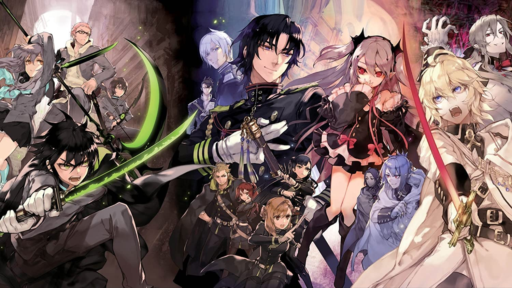

Owari no Seraph is a Japanese dark fantasy manga written by Kagami Takaya and illustrated by Yamamoto Yamato.
It is set in a post-apocalyptic world ruled by vampires after most of humanity was wiped out due to a deadly virus. The story revolves around an orphaned boy by the name of Hyakuya Yuichiro, who is determined to exterminate the vampires after his fellow orphans, or rather, his family, are brutally killed by one. Upon joining the Japanese Imperial Demon Army, he meets equally determined humans who all possess their own resolves to retaliate against the oppressive vampire race.
As the story progresses, the line between humans and vampires becomes more and more blurry with both sides giving in to their greedy desires. On his journey to exterminate the vampires, Yuichiro uncovers shocking revelations that make him question whether the supposedly good human race and the supposedly evil vampire race are really any different in terms of his perception of good and evil.
Watch the trailer below to get a glimpse of the Japanese anime adaptation of Owari no Seraph!
Learn more about Owari no Seraph by navigating through this website and its various pages! Get to know its released volumes, soundtrack, and characters—get to know Owari no Seraph!